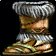
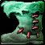

Black Featherlight Boots
Black Featherlight BootsBlack Featherlight Boots305 armor, 41 stamina, 98 attack power, 34 hit rating (2.16%)Drops from Kaz'rogal, Mount Hyjal
305 armor, 41 stamina, 98 attack power, 34 hit rating (2.16%)
Drops from Kaz'rogal, Mount Hyjal
What influencers say
Joardee
Joardee · 42:57
23k views
Argues against it
Joardee and his co-host say nobody wants them: good attack power and hit
but no sockets and better options exist, so you might hold them for hit
and never wear them.
Griftin
Griftin · 3:50
6k views
Keeps it off feral druid
Griftin rates them one star and says pass, because a bear will be in PvP
boots or one of the two Black Temple boots and these have no gem slots.
Showing all 5 spec cards.
No specs are selected, so no cards are showing. Use Show every spec to bring all of them back.
Combat Rogue
Prioritynot yet decided
Constraints
Special-attack hit cap9%special
attacks
Precision-5%
Improved Faerie Fire-3%assumed
Gear needs1%
Entry set13.1%clear
by 12%
Tier set, Tier 6 shoulder and chest and
hands and legs13.3%clear by 12.2%
Dual-wields: white swings miss until 28%, which nothing in this patch
reaches, so hit past the cap still buys accuracy.
White swings stop critting at 50.5%, measured at the special-attack hit
cap.
Nothing rostered reaches it this phase, so crit stays linear all tier.
No haste threshold to protect.
Delta
Black Featherlight
BootsBlack Featherlight
Boots305 armor, 41 stamina, 98
attack power, 34 hit rating (2.16%)Drops from Kaz'rogal, Mount
Hyjal in Combat Rogue
terms EPV 180.96
| Stat | Over best Phase 3 off-piece, Black Temple Shadowmaster's BootsShadowmaster's Boots305 armor, 30 agility, 38 stamina, 76 attack power, 17 crit rating (0.77%)Sockets red, yellow · Socket bonus 3 crit ratingDrops from Mother Shahraz, Black Temple EPV 221.02 | Over best pre-phase off-piece, Karazhan Edgewalker LongbootsEdgewalker Longboots250 armor, 29 agility, 28 stamina, 44 attack power, 13 hit rating (0.82%)Sockets red, yellow · Socket bonus 3 hit ratingDrops from Moroes, Karazhan EPV 188.61 | Over next best off-piece, Leatherworking Boots of Utter DarknessBoots of Utter Darkness278 armor, 34 stamina, 66 attack power, 23 hit rating (1.46%), 32 crit rating (1.45%)Crafted, Leatherworking EPV 178.44 | Over next best off-piece, Leatherworking Fel Leather BootsFel Leather Boots196 armor, 36 attack power, 25 hit rating (1.59%), 17 crit rating (0.77%)Sockets yellow, red · Socket bonus 6 attack power, 6 ranged attack powerCrafted, Leatherworking EPV 175.72 | ||||
|---|---|---|---|---|---|---|---|---|
| Change | Converted | Change | Converted | Change | Converted | Change | Converted | |
| armor | 0 | +55 | +27 | +109 | ||||
| agility | -30 | -30 attack power · -0.75% melee crit | -29 | -29 attack power · -0.72% melee crit | 0 | 0 | ||
| stamina | +3 | +13 | +7 | +41 | ||||
| attack power | +22 | +54 | +32 | +62 | ||||
| hit | +34 | +2.16% | +21 | +1.33% | +11 | +0.70% | +9 | +0.57% |
| crit | -17 | -0.77% | 0 | -32 | -1.45% | -17 | -0.77% | |
| Stat Highlights (Total Change) | -8 attack power -1.52% melee crit +2.16% melee and ranged hit | +25 attack power -0.72% melee crit +1.33% melee and ranged hit | +32 attack power +0.70% melee and ranged hit -1.45% melee crit | +62 attack power +0.57% melee and ranged hit -0.77% melee crit | ||||
No Tier 6 and no Tier 5 is ranked for this spec in this slot, so that
comparison is not shown. A weapon the workbook does not rank cannot be
compared against, and a spec with no captured gear set has nothing
recorded to carry in.
Enhancement Shaman
Prioritynot yet decided
Constraints
Special-attack hit cap9%special
attacks
Dual Wield Specialization-6%
Nature's Guidance-3%
Improved Faerie Fire-3%assumed
Gear needs0%
Entry set9.8%clear
by 12.9%
Talent and the assumed raid debuff cover this cap outright, so every
point of hit on an item is surplus.
Tier set, no Tier 6 piece
worn9.8%clear by 12.9%
The published guide states in its own words that neither Tier 6 set
bonus is worth chasing for this spec, and this set holds no Tier 6
piece.
Dual-wields: white swings miss until 28%, which nothing in this patch
reaches, so hit past the cap still buys accuracy.
White swings stop critting at 50.5%, measured at the special-attack hit
cap.
Nothing rostered reaches it this phase, so crit stays linear all tier.
No haste threshold to protect.
Delta
Black Featherlight
BootsBlack Featherlight
Boots305 armor, 41 stamina, 98
attack power, 34 hit rating (2.16%)Drops from Kaz'rogal, Mount
Hyjal in Enhancement
Shaman terms EPV
155.26
| Stat | Over best Phase 3 off-piece, Black Temple Softstep Boots of TrackingSoftstep Boots of Tracking679 armor, 27 agility, 29 intellect, 76 attack power, 17 hit rating (1.08%), 26 crit rating (1.18%)Drops from Teron Gorefiend, Black Temple EPV 185.14 | Over next best off-piece, Black Temple Shadowmaster's BootsShadowmaster's Boots305 armor, 30 agility, 38 stamina, 76 attack power, 17 crit rating (0.77%)Sockets red, yellow · Socket bonus 3 crit ratingDrops from Mother Shahraz, Black Temple EPV 177.05 | Over next best off-piece, Hyjal Summit Quickstrider MoccasinsQuickstrider Moccasins679 armor, 28 agility, 30 stamina, 31 intellect, 58 attack power, 15 hit rating (0.95%)Sockets red, yellow · Socket bonus 3 agilityDrops from Anetheron, Mount Hyjal EPV 159.05 | Over best pre-phase off-piece, Leatherworking Boots of Utter DarknessBoots of Utter Darkness278 armor, 34 stamina, 66 attack power, 23 hit rating (1.46%), 32 crit rating (1.45%)Crafted, Leatherworking EPV 152.38 | ||||
|---|---|---|---|---|---|---|---|---|
| Change | Converted | Change | Converted | Change | Converted | Change | Converted | |
| armor | -374 | 0 | -374 | +27 | ||||
| agility | -27 | 0 attack power · -1.08% melee crit | -30 | 0 attack power · -1.20% melee crit | -28 | 0 attack power · -1.12% melee crit | 0 | |
| stamina | +41 | +3 | +11 | +7 | ||||
| intellect | -29 | 0 | -31 | 0 | ||||
| attack power | +22 | +22 | +40 | +32 | ||||
| hit | +17 | +1.08% | +34 | +2.16% | +19 | +1.20% | +11 | +0.70% |
| crit | -26 | -1.18% | -17 | -0.77% | 0 | -32 | -1.45% | |
| Stat Highlights (Total Change) | +22 attack power -2.26% melee crit +1.08% melee and ranged hit | +22 attack power -1.97% melee crit +2.16% melee and ranged hit | +40 attack power -1.12% melee crit +1.20% melee and ranged hit | +32 attack power +0.70% melee and ranged hit -1.45% melee crit | ||||
No Tier 6 and no Tier 5 is ranked for this spec in this slot, so that
comparison is not shown. A weapon the workbook does not rank cannot be
compared against, and a spec with no captured gear set has nothing
recorded to carry in.
Feral Cat
Prioritynot yet decided
Constraints
Special-attack hit cap9%special
attacks
Improved Faerie Fire-3%assumed
Gear needs6%
No hit talent exists for this spec.
Entry set10.8%clear
by 4.9%
Tier set, Tier 6 shoulder and
legs10.8%clear by 4.8%
The head slot is Wolfshead Helm and the hands slot is Gloves of the
Searing Grip, and neither is a tier piece, so this set takes neither the
head token nor the hands token; it holds two Tier 6 pieces, at the
shoulder and the legs.
White swings stop critting at 69.5%, measured at the special-attack hit
cap.
Nothing rostered reaches it this phase, so crit stays linear all tier.
No haste threshold to protect.
Delta
Black Featherlight
BootsBlack Featherlight
Boots305 armor, 41 stamina, 98
attack power, 34 hit rating (2.16%)Drops from Kaz'rogal, Mount
Hyjal in Feral Cat
terms EPV 206.80
| Stat | Over best Phase 3 off-piece, Black Temple Shadowmaster's BootsShadowmaster's Boots305 armor, 30 agility, 38 stamina, 76 attack power, 17 crit rating (0.77%)Sockets red, yellow · Socket bonus 3 crit ratingDrops from Mother Shahraz, Black Temple EPV 291.29 | Over best pre-phase off-piece, Karazhan Edgewalker LongbootsEdgewalker Longboots250 armor, 29 agility, 28 stamina, 44 attack power, 13 hit rating (0.82%)Sockets red, yellow · Socket bonus 3 hit ratingDrops from Moroes, Karazhan EPV 257.10 | Over next best off-piece, Leatherworking Fel Leather BootsFel Leather Boots196 armor, 36 attack power, 25 hit rating (1.59%), 17 crit rating (0.77%)Sockets yellow, red · Socket bonus 6 attack power, 6 ranged attack powerCrafted, Leatherworking EPV 226.29 | Over next best off-piece, Leatherworking Boots of Utter DarknessBoots of Utter Darkness278 armor, 34 stamina, 66 attack power, 23 hit rating (1.46%), 32 crit rating (1.45%)Crafted, Leatherworking EPV 215.44 | ||||
|---|---|---|---|---|---|---|---|---|
| Change | Converted | Change | Converted | Change | Converted | Change | Converted | |
| armor | 0 | +55 | +109 | +27 | ||||
| agility | -30 | -30 attack power · -1.20% melee crit | -29 | -29 attack power · -1.16% melee crit | 0 | 0 | ||
| stamina | +3 | +13 | +41 | +7 | ||||
| attack power | +22 | +54 | +62 | +32 | ||||
| hit | +34 | +2.16% | +21 | +1.33% | +9 | +0.57% | +11 | +0.70% |
| crit | -17 | -0.77% | 0 | -17 | -0.77% | -32 | -1.45% | |
| Stat Highlights (Total Change) | -8 attack power -1.97% melee crit +2.16% melee and ranged hit | +25 attack power -1.16% melee crit +1.33% melee and ranged hit | +62 attack power +0.57% melee and ranged hit -0.77% melee crit | +32 attack power +0.70% melee and ranged hit -1.45% melee crit | ||||
No Tier 6 and no Tier 5 is ranked for this spec in this slot, so that
comparison is not shown. A weapon the workbook does not rank cannot be
compared against, and a spec with no captured gear set has nothing
recorded to carry in.
Feral Bear
Prioritynot yet decided
Constraints
Special-attack hit cap9%threat
floor
Improved Faerie Fire-3%assumed
Gear needs6%
No hit talent exists for this spec.
Entry set3.2%short
by 2.8%
Tier set, Tier 6 head and shoulder and
chest and hands and legs3.7%short
by 2.2%
Closed by 4 hit gems against 5 sockets in the set.
A druid has five tier slots, so the Nordrassil four-piece and the
Thunderheart two-piece need six between them and cannot both be worn;
this set wears five pieces of Thunderheart Harness, which leaves it no
Nordrassil piece.
The constraint that decides this spec's gear is crit immunity, which it
reaches at 415 defense skill, or 154 defense rating from gear.
Survival of the Fittest supplies 3% of that reduction, which is why this
spec's figure is lower than a plate tank's.
This spec cannot hold all four avoidance entries, so it cannot
sustainably push crushing blows off the attack table.
White swings stop critting at 69.5%, measured at the special-attack hit
cap.
Nothing rostered reaches it this phase, so crit stays linear all tier.
No haste threshold to protect.
Delta
Black Featherlight
BootsBlack Featherlight
Boots305 armor, 41 stamina, 98
attack power, 34 hit rating (2.16%)Drops from Kaz'rogal, Mount
Hyjal in Feral Bear
terms EPV 472.00
| Stat | Over best Phase 3 off-piece, Black
Temple
 Treads of the Den MotherTreads of the Den Mother516 armor, 38 strength, 32 agility, 47 stamina, 14 intellectDrops from Trash / zone drop, Black Temple EPV 602.44 |
Over best
pre-phase off-piece, Leatherworking
 Boots of Natural GraceBoots of Natural Grace474 armor, 33 strength, 26 agility, 37 stamina, 13 intellect, 14 hit rating (0.89%)Crafted, Leatherworking EPV 559.86 |
Over next best off-piece, Black Temple Shadowmaster's BootsShadowmaster's Boots305 armor, 30 agility, 38 stamina, 76 attack power, 17 crit rating (0.77%)Sockets red, yellow · Socket bonus 3 crit ratingDrops from Mother Shahraz, Black Temple EPV 552.53 | Over next best off-piece, Serpentshrine Cavern Boots of Effortless StrikingBoots of Effortless Striking278 armor, 42 agility, 41 stamina, 58 attack powerDrops from The Lurker Below, Serpentshrine Cavern EPV 475.27 | ||||
|---|---|---|---|---|---|---|---|---|
| Change | Converted | Change | Converted | Change | Converted | Change | Converted | |
| armor | -211 | -169 | 0 | +27 | ||||
| strength | -38 | -76 attack power | -33 | -66 attack power | 0 | 0 | ||
| agility | -32 | 0 attack power · -1.28% melee crit | -26 | 0 attack power · -1.04% melee crit | -30 | 0 attack power · -1.20% melee crit | -42 | 0 attack power · -1.68% melee crit |
| stamina | -6 | -60 health | +4 | +40 health | +3 | +30 health | 0 | |
| intellect | -14 | -13 | 0 | 0 | ||||
| attack power | +98 | +98 | +22 | +40 | ||||
| hit | +34 | +2.16% | +20 | +1.27% | +34 | +2.16% | +34 | +2.16% |
| crit | 0 | 0 | -17 | -0.77% | 0 | |||
| Stat Highlights (Total Change) | -60 health | +40 health | +30 health | No changes in converted stats. | ||||
No Tier 6 and no Tier 5 is ranked for this spec in this slot, so that
comparison is not shown. A weapon the workbook does not rank cannot be
compared against, and a spec with no captured gear set has nothing
recorded to carry in.
Beast Mastery Hunter
Prioritynot yet decided
Constraints
Ranged hit cap9%shots
Improved Faerie Fire-3%assumed
Gear needs6%
The Surefooted talent sits in the Survival tree, which this build does
not reach.
Entry set7.7%clear
by 1.7%
Tier set, Tier 6 shoulder and chest and
hands and legs5.8%short by 0.2%
Closed by 1 hit gem against 8 sockets in the set.
No crit cap.
No haste threshold to protect.
Delta
Black Featherlight
BootsBlack Featherlight
Boots305 armor, 41 stamina, 98
attack power, 34 hit rating (2.16%)Drops from Kaz'rogal, Mount
Hyjal in Beast Mastery
Hunter terms EPV
149.00
| Stat | Over best Phase 3 off-piece, Black Temple Softstep Boots of TrackingSoftstep Boots of Tracking679 armor, 27 agility, 29 intellect, 76 attack power, 17 hit rating (1.08%), 26 crit rating (1.18%)Drops from Teron Gorefiend, Black Temple EPV 197.15 | Over next best off-piece, Black Temple Shadowmaster's BootsShadowmaster's Boots305 armor, 30 agility, 38 stamina, 76 attack power, 17 crit rating (0.77%)Sockets red, yellow · Socket bonus 3 crit ratingDrops from Mother Shahraz, Black Temple EPV 192.95 | Over next best off-piece, Hyjal Summit Quickstrider MoccasinsQuickstrider Moccasins679 armor, 28 agility, 30 stamina, 31 intellect, 58 attack power, 15 hit rating (0.95%)Sockets red, yellow · Socket bonus 3 agilityDrops from Anetheron, Mount Hyjal EPV 167.00 | Over best pre-phase off-piece, Tempest Keep Star-Strider BootsStar-Strider Boots619 armor, 33 agility, 13 stamina, 18 intellect, 66 attack powerSockets blue, blue · Socket bonus 6 attack power, 6 ranged attack powerDrops from High Astromancer Solarian, Tempest Keep EPV 163.75 | ||||
|---|---|---|---|---|---|---|---|---|
| Change | Converted | Change | Converted | Change | Converted | Change | Converted | |
| armor | -374 | 0 | -374 | -314 | ||||
| agility | -27 | -27 attack power · -27 ranged attack power · -0.68% melee crit | -30 | -30 attack power · -30 ranged attack power · -0.75% melee crit | -28 | -28 attack power · -28 ranged attack power · -0.70% melee crit | -33 | -33 attack power · -33 ranged attack power · -0.82% melee crit |
| stamina | +41 | +3 | +11 | +28 | ||||
| intellect | -29 | 0 | -31 | -18 | ||||
| attack power | +22 | +22 | +40 | +32 | ||||
| hit | +17 | +1.08% | +34 | +2.16% | +19 | +1.20% | +34 | +2.16% |
| crit | -26 | -1.18% | -17 | -0.77% | 0 | 0 | ||
| Stat Highlights (Total Change) | -5 attack power -27 ranged attack power -1.85% melee crit +1.08% melee and ranged hit | -8 attack power -30 ranged attack power -1.52% melee crit +2.16% melee and ranged hit | +12 attack power -28 ranged attack power -0.70% melee crit +1.20% melee and ranged hit | -1 attack power -33 ranged attack power -0.82% melee crit +2.16% melee and ranged hit | ||||
No Tier 6 and no Tier 5 is ranked for this spec in this slot, so that
comparison is not shown. A weapon the workbook does not rank cannot be
compared against, and a spec with no captured gear set has nothing
recorded to carry in.